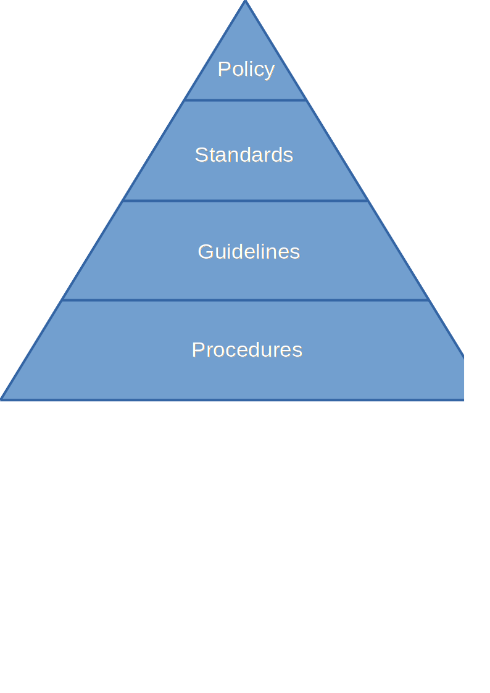

Policies, Standards, Procedures and Guidelines
Text copied from: http://mindfulsecurity.com/2009/02/03/policies-standards-and-guidelines/
As with
What are Policies, Standards, Guidelines and Procedures?
In order to protect information, businesses need to implement rules and controls around the protection of information and the systems that store and process this information. This is commonly achieved through the implementation of information security policies, standards, guidelines and procedures. However, what exactly are these? This article will explain what information security policies, standards, guidelines and procedures are, the differences between each and how they fit together to form an information security policy framework.

Policies
A Security policy is a definition/statement of what it means to be secure for a system, organization or other entity [2]. An information security policy is a statement regarding the protection of business information. These statements are of a high level and are usually produced and supported by senior management.
The policy defines the scope of the information that has to be protected and describes at high level what type of controls must be in place to protect it. A policy commonly describes security roles and responsibilities regarding the information. Known security related policies are ISO 27001, PCI and Sarbanes-Oxley. These are included into the business policies depending on the branch of the business. Next to branch specific policies, there can be legal policies that have to be met regarding the protection of information. Businesses can have a single overall policy, or multiple specific policies targeted at individual areas, e.g. email policy and personal use policy. A policy should frequently be revisited to ensure that it is still covers all the requirements set by laws and regulations.
Standards
A standard is an established norm in regards to technical systems [3]. An information security standard is a specific description of a certain security control. Standards can be taken from external sources, but the foundation is that a standard is there to help and support a policy.
Needs rewriting
Standards help to ensure security consistency across the business and usually contain security controls relating to the implementation of specific technology, hardware or software. For example, a password standard may set out rules for password complexity and a Windows standard may set out the rules for hardening Windows clients.
Guidelines
A guideline is a statement by which to determine a course of action [4]. Guidelines are non-mandatory controls that are defined to support standards. They are commonly referred as recommendations and can act as a reference when there is no applicable standard.
Guidelines commonly are best practices that are strongly recommended, like coding style guides are. They commonly contain additional recommendations that support and improve controls that are defined in a standard. For example, a password standard may define that passwords should expire after a certain period, the password guideline would state that it is best practice to expire passwords after 30 days.
Procedures
A Procedure is designed to describe Who, What, Where, When, and Why by means of establishing corporate accountability in support of the implementation of a "policy" [5].
As where a policy, standard and guideline states the controls that should be in place, a procedure details on how to implement these controls. For example, SOX, ISO27001, PCI DSS and HIPAA all call for strong cyber security defenses, with a hardened build-standard at the core, the procedure details each step that has to be taken to harden said build.